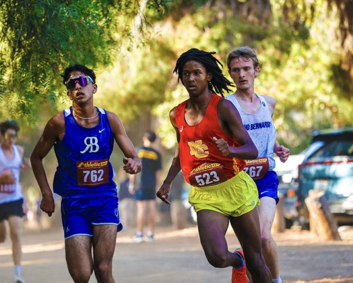

Rancho Bernardo High School Cross Country is a competitive program with in the Palomar League of San Diego, California. The boys program won the league in 2005, 2010, and 2015 and the girls won in 1998, 1999, 2003, 2004, 2008, 2009, 2012, 2017, 2018, and 2020. The program hosts the Bronco-Round Up, a 2 mile race at Kit Carson Park in Escondido.